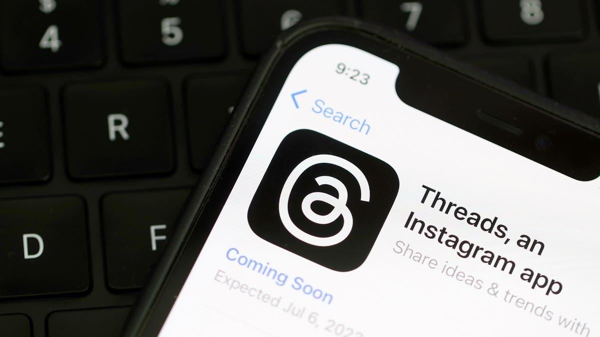

Threads’ User Engagement Reportedly Plummets After Explosive StartTopline Social media app Threads, Meta’s new Twitter alternative, has seen a nearly 70% decline in the number of daily active users since its July 7 peak, according to market intelligence firm Sensor Tower, spoiling their explosive launch just two weeks ago and paling in comparison to Twitter, the social media giant it’s trying to dethrone. Key Facts Threads’ daily active users stands at around 13 million—down from 44 million on July 7—and the average daily time spent on the app is four minutes, which is down from its launch day peak of 19 minutes, according to Sensor Tower. This comes after the company reported it had hit 100 million sign-ups within a week after it launched on July 5. Twitter has around 200 million active daily users and the average time spent daily on the platform is 30 minutes, according to Sensor Tower. The two social media platforms operate similarly, but Threads is missing some significant features of Twitter, including desktop functionality and the ability to search for topics rather than just users. Meta executives have said they expected a drop in usage, and are planning new features to keep users on the app, the Wall Street Journal reported. Forbes has reached out to Meta for comment. Crucial Quote “It is wholly irrelevant how many people sign up,” Lia Haberman, a social media marketing lecturer and adjunct professor at UCLA told the Journal. “What matters is the level of engagement and interaction.” She explained that Threads is “not actually a town square. It’s a for-profit business.” News Peg Threads launched July 5, allowing users to sign up using their accounts from Meta’s other social media platform, Instagram. With over 2 billion monthly users, Instagram’s popularity likely helped create the surge in early sign-ups for the platform. During the first two days after Threads’ launch, Twitter’s web traffic was down 5% compared to the previous week, the Journal reported. However, Sensor Tower said it hasn’t seen a material change in Twitter’s traffic since Threads’ launch. Meta CEO Mark Zuckerberg has made clear Threads is his company’s attempt to poach the market long enjoyed by Twitter. “I think there should be a public conversations app with 1 billion+ people on it,” Zuckerberg wrote in a post to his new app. “Twitter has had the opportunity to do this but hasn't nailed it. Hopefully we will.” Key Background Meta launched the app during a moment of turmoil for Twitter, which billionaire Elon Musk purchased in October. Under Musk’s controversial leadership, the company has fallen to a value of $15 billion—about a third of the $44 billion he paid for it—as of May, according to Fidelity. The company has made a number of controversial decisions since Musk took over, including implementing a temporary limit to the number of tweets a user can see in one day and turning the platform’s user verification system into a for-purchase membership. Twitter has also suffered major outages and mass layoffs in recent months. Earlier in July, an attorney for Twitter threatened to sue Meta, accusing the company of stealing Twitter’s "trade secrets and other intellectual property" by hiring former Twitter employees to create Threads—accusations Meta has denied. Tangent Zuckerberg and Musk’s feud has spilled outside of the realm of social media. Ahead of the release of Threads, Musk challenged Zuckerberg to a UFC-style cage fight, which Zuckerberg, who trains in Brazilian Jiu-jitsu, seemingly accepted, but it is unclear whether the fight will happen, as Musk has reversed course somewhat and signaled he’s no longer interested in actually fighting. Forbes Valuation We estimate Musk’s net worth to be $239 billion, making him the wealthiest person on Earth. We estimate Zuckerberg is the world’s eighth-richest person, at $104.6 billion. Further Reading Threads User Engagement Continues to Drop, Adding Urgency for New Features (Wall Street Journal) |
 |